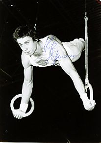

Lutz Hoffmann (GDR)
1981 European PB Bronze Medalist

Medal Total
Olympic Games: 1 Silver
European Championships:
1 Bronze
Competition Results
1979
Cottbus International: 3rd AA
European Championships: 18th AA, 8th HB
University Games: 23rd AA
World Championships: 4th Team, 30th AA (prelims)
1980
Champions All: 1st AA
Cottbus International: 2nd AA, 1st V, 2nd FX, 2nd R
GDR Championships: 2nd AA
GDR-SUI Dual Meet: 1st Team, 3rd AA
Olympic Games: 2nd Team, 7th AA, 8th FX
World Cup: 12th AA, 7th PH, 8th HB
1981
Blume Memorial: 3rd AA
European Championships: 8th AA, 3rd PB, 4th FX, 7th V
FRA-GDR Dual Meet: 1st Team, 8th AA
Moscow News International: 11th AA
1983
European Championships: 4th AA, 4th V, 5th PB
This page was created on September
12, 2004.
© Gymn Forum